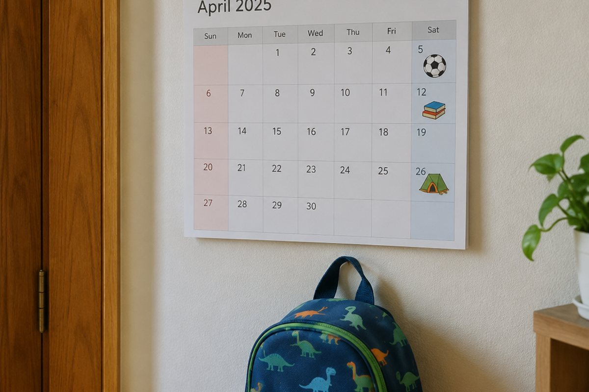

전체 단원 › 5학년 1학기 › 영어 › 계획 말하기
이번 방학에 무엇을 할 거야? 계획을 영어로 말해 볼까?

곧 다가올 방학이나 주말에 하고 싶은 일이 있나요? 앞으로 할 일을 영어로 말하는 방법을 배워 봐요.
앞으로 할 일: be going to
앞으로 할 계획을 말할 때는 "I'm going to visit my uncle.(나는 삼촌 댁에 갈 거야.)"처럼 be going to를 써요.
be going to 뒤에는 동사의 원래 모양을 써요. I와는 am, he·she와는 is, you·we·they와는 are를 짝지어요.
I'm going to swim. / She is going to read books.
때를 나타내는 말
앞으로의 때를 말할 때는 tomorrow(내일), this weekend(이번 주말), next week(다음 주), this summer(이번 여름) 같은 말을 함께 써요.
"I'm going to go camping this weekend.(이번 주말에 캠핑을 갈 거야.)"처럼 문장 끝에 붙이면 돼요.
this weekend, next week, tomorrow
계획 묻고 답하기
"What are you going to do this weekend?(이번 주말에 무엇을 할 거니?)"라고 물어요.
"Are you going to ~?"로 물으면 "Yes, I am." 또는 "No, I'm not."으로 대답해요. 함께하자고 할 때는 "Let's go together!(같이 가자!)"라고 해요.
Are you going to play baseball? - Yes, I am.
핵심 낱말
- plan
- 계획
- be going to
- ~할 것이다, ~할 예정이다
- tomorrow
- 내일
- this weekend
- 이번 주말
- next week
- 다음 주
꼭 알아야 할 표현
| What are you going to do this weekend? | 이번 주말에 무엇을 할 거니? | 계획을 물을 때 |
| I'm going to visit my uncle. | 나는 삼촌 댁에 갈 거야. | |
| I'm going to go camping. | 나는 캠핑을 갈 거야. | |
| Are you going to swim? | 너 수영할 거니? | |
| Yes, I am. | 응, 그럴 거야. | |
| No, I'm not. | 아니, 안 할 거야. | |
| Let's go together! | 같이 가자! | 함께하자고 할 때 |
| Have a nice weekend! | 주말 잘 보내! | 헤어질 때 |
한 줄 정리
- 앞으로의 계획은 be going to + 동사 원래 모양으로 말해요.
- tomorrow, this weekend, next week 같은 때를 나타내는 말을 함께 써요.
- What are you going to do?로 묻고, Are you going to ~?에는 Yes, I am./No, I'm not.으로 대답해요.
학교 교육과정 연결
- [6영02-06] 자신의 감정이나 의견, 경험이나 계획을 간단한 문장으로 표현한다.
- [6영02-07] 일상생활 주제에 관한 담화나 글의 세부 정보를 간단한 문장으로 묻거나 답한다.